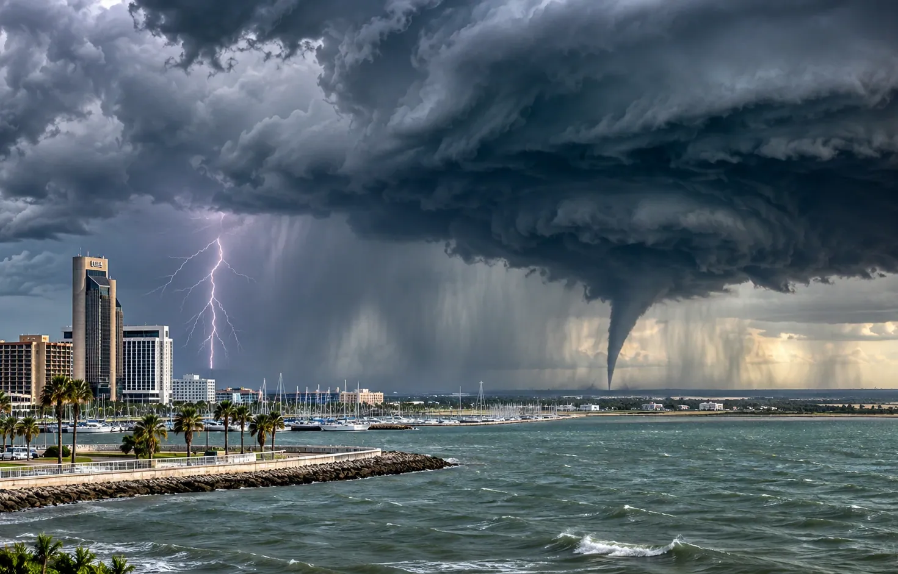

PUBLIC SAFETY
Rip Currents: The Beach Hazard You Cannot Judge From the Parking Lot
NOVEMBER 8, 2026 · TNS NEWS DESK

The water may look inviting even when the current is capable of carrying a swimmer away from shore.
Texas beach conditions can change with wind, surf and coastal weather systems. On a day when thunderstorms are drawing attention inland, beachgoers should remember that the ocean has its own hazards. A rip current is a narrow flow of water moving away from shore, often through a break in sandbars.
It is important not to overstate today’s alert status. A general forecast of rough weather is not proof that a rip current statement is active at every Texas beach. Local NWS coastal offices and beach safety officials provide the relevant current guidance, and that guidance may differ from one stretch of coastline to another.
If caught in a rip current, the National Weather Service advises staying calm, not fighting the flow directly and swimming parallel to the shoreline when able to escape the current. People who cannot make progress should float or tread water and signal for help.
For families, the best protection begins before entering the surf: swim near lifeguards when available, obey posted flags and avoid going into the water during thunderstorms. Strong swimmers can be caught in dangerous currents, and a calm-looking surface is not a reliable safety test.
The takeaway is not that every Texas beach is unsafe today. It is that a headline about coastal weather should send readers to the right, location-specific safety information rather than leave them with a vague impression of danger.
Sources and continuing coverage
www.weather.gov · www.weather.gov
Published November 8, 2026. Forecasts and warnings can change. TNS analysis is distinguished from official weather alerts and verified reporting.